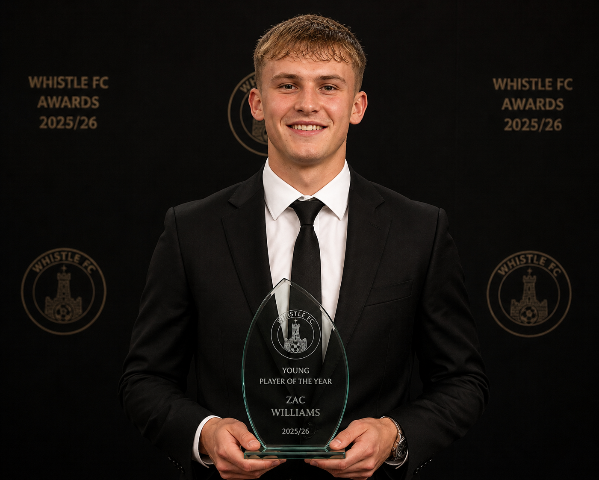
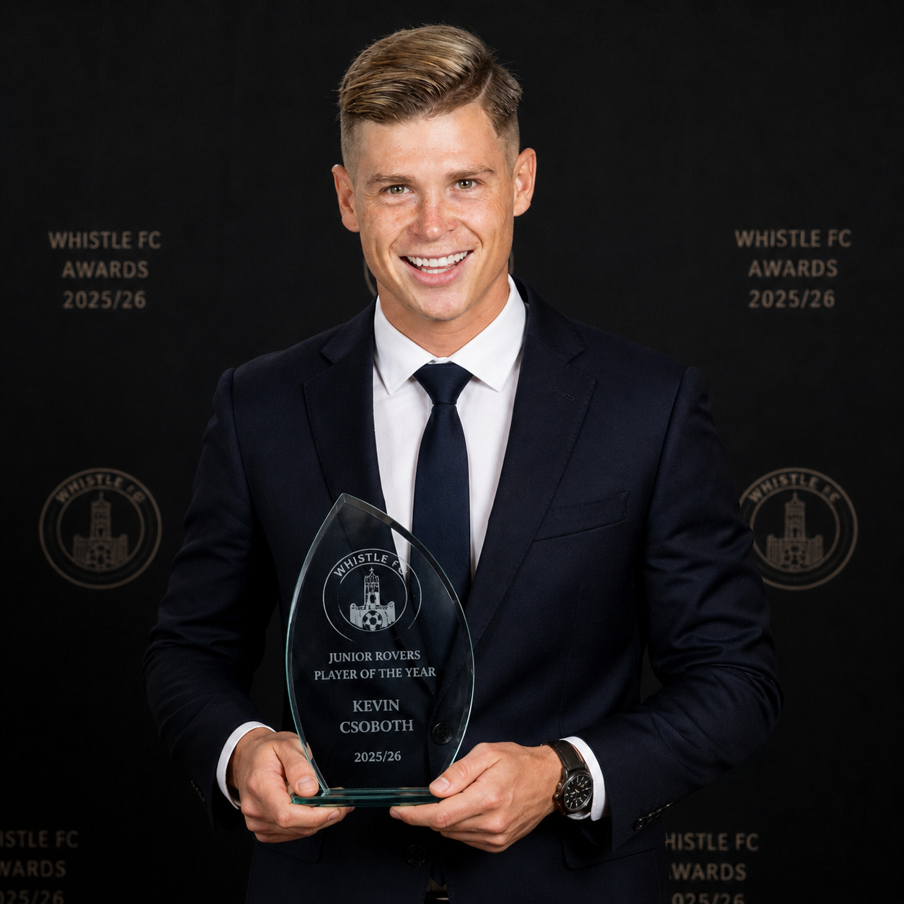

Whistle Football Club are delighted to confirm the winners of the 2025/26 End of Season Awards, recognising the outstanding contributions made across a memorable campaign for the club.
The Whistlers enjoyed another strong season in EFL League One, finishing seventh in the table and lifting the Vertu Trophy after a campaign filled with important moments, standout performances and continued progress.
The evening gave the club the opportunity to celebrate the players, staff and supporters who have helped drive Whistle forward throughout the 2025/26 season.
The headline award of the night, Player of the Year, was presented to Emmanuel Dennis following a superb campaign leading the line for the Whistlers.
“Emmanuel has been outstanding for us this season. His goals, his movement and his experience have made a huge difference to the team.
“He has led the line brilliantly and fully deserves this recognition.”
The Players’ Player of the Year award, voted for by the squad, was awarded to Lewis Baker after a season of leadership, consistency and quality in midfield.
“Lewis sets the standards every day. His experience, quality on the ball and influence in big moments have been key for us.
“He is someone the players trust and rely on.”

The Young Player of the Year award went to Zac Williams, who impressed throughout the season with a series of composed and mature performances in defence.
“Zac has shown maturity beyond his years. He has stepped up this season and proved he can perform at this level consistently.
“This is just the beginning for him.”
The Junior Whistlers Player of the Year, voted for by the club’s young supporters, was awarded to Kevin Csoboth following an exciting second half of the campaign.
“Kevin brought energy, creativity and excitement to the team. He is a player the young supporters really connect with.
“You can feel the buzz when he is on the pitch.”
The Goal of the Season award was won by Paolo Sciortino for his outstanding strike against Peterborough United.
“It was a top-level goal. The technique and composure in that moment were exceptional.
“It is exactly the kind of quality that can change games.”

The club would like to congratulate all winners and place on record its thanks to every player, member of staff and supporter for their contribution to the 2025/26 season.
It has been another year of progress for Whistle FC, and the End of Season Awards provided a fitting opportunity to recognise the individuals who helped make the campaign so memorable.
Full List of Winners:
Player of the Year – Emmanuel Dennis
Players’ Player of the Year – Lewis Baker
Young Player of the Year – Zac Williams
Junior Whistlers Player of the Year – Kevin Csoboth
Goal of the Season – Paolo Sciortino vs Peterborough United